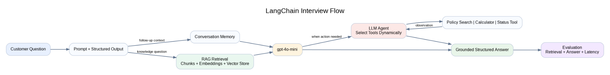

What I built
I built a customer-support copilot with LangChain and gpt-4o-mini. It combines structured output, conversation memory, document-based RAG, evaluation, and agent-driven tool calling.
我构建了一个客服 Copilot，整合结构化输出、会话记忆、文档 RAG、评估和 Agent 工具调用。
Positioning: This document summarizes a hands-on learning prototype built with modern LangChain APIs andgpt-4o-mini.中文： 本文用于总结一个基于现代 LangChain API 和
gpt-4o-mini的可运行学习项目。
中文： 我构建了一个客服 Copilot 原型，整合了提示词、结构化输出、对话记忆、LCEL、文档检索、RAG 评估和工具调用 Agent。
中文： 这是可运行的作品集原型，而不是已经投产的系统；它展示了完整设计及生产化所需的核心工程概念。

flowchart LR
L1[Model + Prompt + Structured Output]
L2[Conversation Memory]
L3[LCEL Chains + Routing]
L4[Document Q&A + RAG]
L5[Evaluation]
L6[Tools + Agent]
Demo[Customer Support Copilot]
L1 --> L2 --> L3 --> L4 --> L5 --> L6 --> DemoChatOpenAI model using
gpt-4o-mini.ChatPromptTemplate to separate reusable
instructions from runtime input.prompt | model | parser.with_structured_output() to
return validated fields instead of free-form text.User Input → Prompt Template → gpt-4o-mini → Output Parser → Typed Resultfrom pydantic import BaseModel, Field
from langchain_openai import ChatOpenAI
class TicketClassification(BaseModel):
category: str = Field(description="Ticket category")
priority: str = Field(description="low, medium, or high")
summary: str = Field(description="Short summary")
model = ChatOpenAI(model="gpt-4o-mini", temperature=0)
structured_model = model.with_structured_output(TicketClassification)
result = structured_model.invoke(
"The API has been unavailable for all users for 30 minutes."
)I used prompt templates to standardize model instructions and Pydantic structured output to make the LLM response predictable, validated, and easier to integrate with downstream services.
中文： 我用 Prompt Template 统一模型指令，并通过 Pydantic 结构化输出，让结果更稳定、可验证，也更方便下游系统使用。
thread_id to isolate different conversations.Message 1 → Save under thread_id → Message 2 → Load prior context → Answerfrom langchain.agents import create_agent
from langchain_openai import ChatOpenAI
from langgraph.checkpoint.memory import InMemorySaver
model = ChatOpenAI(model="gpt-4o-mini", temperature=0)
memory = InMemorySaver()
agent = create_agent(
model=model,
tools=[],
system_prompt="You are a helpful customer-support assistant.",
checkpointer=memory,
)
config = {"configurable": {"thread_id": "customer-001"}}The model itself does not permanently remember the user. The application stores conversation state through a checkpointer and retrieves it using the same thread ID.
中文： 模型本身不会永久记住用户；应用通过 checkpointer 保存会话状态，并使用相同的 thread ID 读取历史。
Input → Classify Intent → Route → Specialized Chain → Resultfrom langchain_core.prompts import ChatPromptTemplate
from langchain_core.output_parsers import StrOutputParser
prompt = ChatPromptTemplate.from_template(
"Write a concise support response for this issue:\n{issue}"
)
chain = prompt | model | StrOutputParser()
answer = chain.invoke({"issue": "I cannot log in to my account."})I used LCEL to create explicit, testable pipelines. A chain follows a predefined path, which makes it suitable when execution order must remain predictable.
中文： 我用 LCEL 构建明确且可测试的处理链；Chain 按预定义路径执行，适合要求流程稳定可控的场景。
Document
objects.InMemoryVectorStore.Documents
→ Chunking
→ Embeddings
→ Vector Store
→ Retriever
→ Relevant Context
→ gpt-4o-mini
→ Grounded Answer + Sourcesfrom langchain_core.vectorstores import InMemoryVectorStore
from langchain_openai import OpenAIEmbeddings
from langchain_text_splitters import RecursiveCharacterTextSplitter
splitter = RecursiveCharacterTextSplitter(
chunk_size=300,
chunk_overlap=50,
)
chunks = splitter.split_documents(documents)
embeddings = OpenAIEmbeddings(model="text-embedding-3-small")
vector_store = InMemoryVectorStore(embeddings)
vector_store.add_documents(chunks)
retriever = vector_store.as_retriever(search_kwargs={"k": 2})
relevant_docs = retriever.invoke("What is the refund policy?")中文： Chunk overlap 可以降低重要上下文被切断的风险，但过大会增加索引成本和重复检索。
I implemented a two-step RAG workflow. The retriever first finds the most relevant document chunks, and the model then generates an answer using only that retrieved context. This reduces unsupported answers and enables source attribution.
中文： 我实现了两阶段 RAG：先检索相关文档片段，再让模型仅基于这些上下文回答，从而减少无依据回答并支持来源追踪。
Test Question
→ Retrieve Context
→ Generate Answer
→ Retrieval Evaluation
→ Answer Evaluation
→ Score and Failure Analysis| Layer | What to evaluate |
|---|---|
| Retrieval | Recall@k, relevance, correct source returned |
| Generation | Correctness, groundedness, completeness |
| System | Latency, token usage, cost, failure rate |
I separated retrieval evaluation from generation evaluation because a wrong answer may come from poor retrieval or from incorrect reasoning over correct context. The two failure modes require different fixes.
中文： 我把检索评估和生成评估分开，因为错误可能来自检索不到正确资料，也可能来自模型对正确资料推理错误，两者需要不同优化方式。
create_agent().User Request
→ LLM Reasons About Intent
→ Select Tool
→ Execute Tool
→ Observe Tool Result
→ Generate Final Answerfrom langchain.tools import tool
from langchain.agents import create_agent
@tool
def calculate_refund(amount: float, percentage: float) -> float:
"""Calculate a refund amount using a percentage."""
return round(amount * percentage / 100, 2)
agent = create_agent(
model=model,
tools=[calculate_refund],
system_prompt="Use tools when calculation is required.",
)| Chain | Agent |
|---|---|
| Developer defines the execution path | LLM selects the next action |
| Predictable and easier to test | Flexible but more variable |
| Lower latency and cost | Often requires multiple model calls |
| Best for stable workflows | Best for dynamic tool selection |
I used agents only where dynamic tool selection added value. For predictable retrieval pipelines, I kept an explicit chain because it is easier to test, control, and optimize.
中文： 我只在动态工具选择有价值时使用 Agent；对于固定 RAG 流程，我保留明确的 Chain，因为它更容易测试、控制和优化。
中文： LangChain 是连接模型、提示词、结构化输出、检索、工具、记忆和工作流逻辑的 LLM 应用框架。
中文： RAG 在生成答案前先从外部知识库检索相关资料，并把资料提供给模型。
中文： LLM Agent 根据目标和已有结果，自主决定下一步动作或需要调用的工具。
中文： Embedding 是表达语义的数值向量，用于通过向量相似度查找语义接近的文本。
InMemoryVectorStore; a
production system could use FAISS, Milvus, Pinecone, OpenSearch, or
another managed solution.中文： 向量库保存 embedding 并提供相似度检索；本原型使用内存向量库，生产环境可替换为 FAISS、Milvus、Pinecone 或 OpenSearch。
I built a customer-support copilot prototype using LangChain andgpt-4o-mini. It supports prompt templates, structured outputs, conversation memory, LCEL chains, document retrieval, two-step RAG, evaluation, and tool-calling agents. I focused on separating ingestion, retrieval, generation, and evaluation so that each layer could be tested and improved independently.
I built an end-to-end LangChain prototype for customer support. First, I used prompt templates and Pydantic structured output to make model responses predictable. I added thread-level memory so follow-up questions could reuse customer context. For document Q&A, I split policy documents into overlapping chunks, generated embeddings, indexed them in an in-memory vector store, and retrieved the top relevant chunks before callinggpt-4o-mini. I then evaluated retrieval and answer quality separately. Finally, I created tools and an agent that could decide whether to retrieve policy information or perform a calculation. The project is a working prototype, and the next production steps would include persistent storage, access control, observability, and a managed vector database.
中文： 该项目从结构化输出、记忆、RAG 到 Agent 工具调用形成完整链路，并明确区分当前原型和未来生产化能力。
Built a LangChain-based customer-support copilot prototype with structured outputs, thread-level memory, LCEL workflows, document RAG, retrieval/answer evaluation, and tool-calling agents usinggpt-4o-mini.
gpt-4o-mini, covering prompt templates, Pydantic structured
output, conversation memory, LCEL routing, and tool-calling agents.Direct API calls are enough for simple prompts. I used LangChain because the application required reusable prompts, structured outputs, retrieval, memory, tools, and composable workflows. LangChain reduced integration boilerplate and provided consistent abstractions for these components.
A prompt defines the instruction and input format sent to the model. A chain composes multiple processing steps, such as prompt formatting, model invocation, parsing, retrieval, or routing.
A chain follows a developer-defined execution path. An agent uses the LLM to choose the next tool or action dynamically. I prefer chains for predictable workflows and agents for requests requiring flexible tool selection.
RAG provides relevant external evidence in the model context and instructs the model to answer from that evidence. It does not eliminate hallucination completely, so source attribution and evaluation are still required.
Entire documents may exceed the context window and contain unrelated information. Chunking creates smaller retrievable units so the system can send only relevant evidence to the model.
I started with a small configurable chunk size and overlap for the prototype, then evaluated whether retrieved chunks contained enough complete context. In production, I would tune these values using retrieval recall, answer quality, document structure, latency, and cost.
The answer quality usually degrades even if the model is strong. I would inspect retrieval results, improve chunking and metadata, adjust top-k, add query rewriting or reranking, and measure retrieval recall separately.
Top-k is the number of most similar chunks returned by the retriever. A small k may miss evidence, while a large k may add noise, latency, and token cost.
I used a small test dataset and evaluated two stages separately: whether the correct source was retrieved and whether the generated answer was correct and grounded in the retrieved context.
It uses another model call to score an output against defined criteria such as correctness or groundedness. It is scalable but not perfectly objective, so I would combine it with deterministic checks and human review for important use cases.
The application uses a checkpointer and athread_id. Messages are stored under a conversation thread and loaded again for follow-up requests. It is application-managed state, not permanent memory inside the model.
Structured output constrains the response to a defined schema, such as a Pydantic model. It improves validation, testing, API integration, and downstream automation compared with parsing arbitrary text.
A tool needs a clear name, precise description, typed arguments, predictable output, input validation, and controlled side effects. The description is important because the model uses it when deciding whether to call the tool.
I would avoid an agent when the workflow is fixed, latency-sensitive, inexpensive to express as a chain, or requires strict deterministic control. Agents add model calls, cost, latency, and debugging complexity.
I would add persistent vector storage, document versioning, metadata filtering, authentication and document-level authorization, prompt/version management, tracing, token and latency monitoring, offline evaluation, CI/CD, caching, rate limiting, and fallback handling.
I would enforce access control before retrieval, filter documents by user permissions, encrypt data in transit and at rest, redact sensitive data, log retrieval and generation events, and prevent unauthorized content from entering the model context.
I would cache embeddings and repeated answers, use smaller models where sufficient, limit top-k and context size, batch indexing operations, avoid unnecessary agent loops, and monitor token usage per workflow.
gpt-4o-mini?It is suitable for a learning prototype because it offers good quality with relatively low latency and cost. Model choice should still be validated against task accuracy, context requirements, latency, and budget.
In the L1–L6 notebook prototype, I usedInMemoryVectorStore. I understand FAISS as a local vector-similarity library and can replace the in-memory store with FAISS when local persistence or larger-scale retrieval is required.
No. It is a working portfolio prototype designed to demonstrate the complete architecture and core implementation. Production readiness would require security, persistent infrastructure, observability, evaluation gates, scalability testing, and operational controls.
| Decision | Why | Limitation |
|---|---|---|
gpt-4o-mini |
Low-cost, fast prototype model | Must validate quality for production tasks |
| LCEL chains | Explicit and testable workflows | Less flexible than agents |
InMemoryVectorStore |
Minimal setup for learning | No durable persistence |
| Two-step RAG | Predictable retrieval then generation | Less dynamic than agentic RAG |
| Pydantic output | Validation and stable integration | Schema may require retries on failures |
| In-memory checkpointer | Easy conversation-memory demo | State disappears when process stops |
| Small evaluation set | Fast feedback | Not statistically representative |
Current Prototype
→ Persistent Vector Database
→ Metadata and Permission Filtering
→ Reranking and Query Rewriting
→ FastAPI Service
→ Observability and Evaluation Dashboard
→ CI/CD and Automated Quality Gates
→ Human Review for Low-Confidence AnswersLangChain = application framework
RAG = retrieve evidence before generation
Embedding = semantic vector representation
Vector store = similarity search over embeddings
Retriever = returns relevant document chunks
Chain = predefined workflow
Agent = model selects actions/tools dynamically
Memory = application-managed conversation state
Structured output = schema-validated response
Evaluation = measure retrieval and generation separatelyMy core strength is data engineering, so I approached the LLM application as a data and workflow system rather than only a chatbot. I separated document ingestion, semantic indexing, retrieval, generation, evaluation, and tool orchestration so each component could be tested, monitored, and replaced independently.
READ_ALOUD_RIGHT_ALIGNED_V2中文： 我的核心优势是数据工程，因此我把 LLM 应用当成数据与工作流系统，而不仅是聊天机器人；我将摄取、索引、检索、生成、评估和工具编排分层设计，使每一层都可以独立测试、监控和替换。